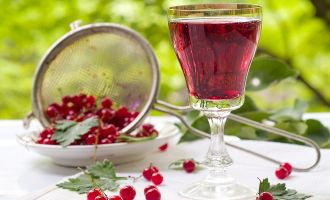
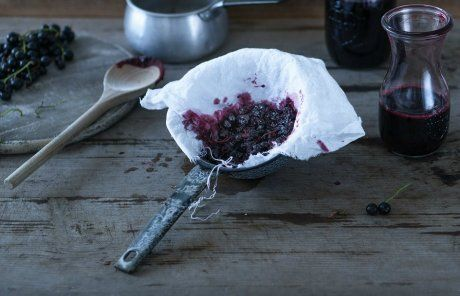
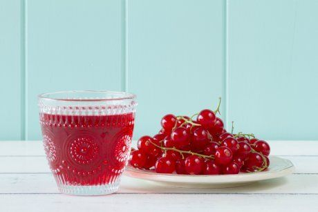
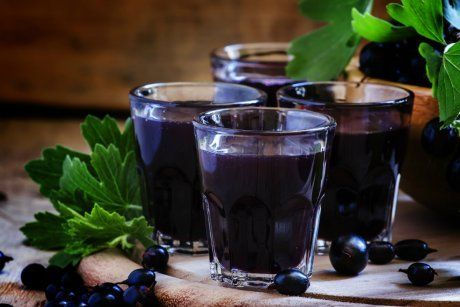
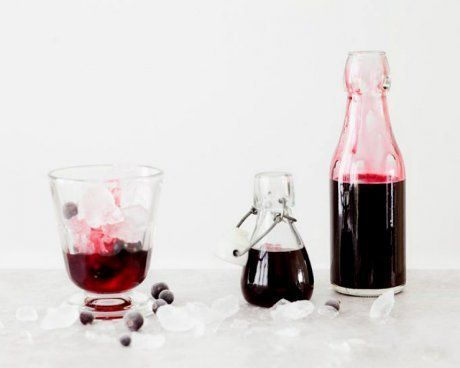

marmiton.org
Созревший урожай смородины можно переработать и заготовить на зиму в виде вкусных наливок и настоек, тем более сделать это в домашних условиях совсем не сложно. Смотрите нашу подборку простых рецептов домашнего вина и других самодельных спиртных напитков.
Ягоды красной и черной смородины – это хороший виноматериал. В домашних условиях можно просто приготовить вино, настойку или наливку. Для этого достаточно добавить к ягодам сахар, немного воды или водки. А для более насыщенного вкуса и аромата дополнить домашнее вино из смородины можно добавлением пряностей.
Домашнее вино из черной смородины

Вино из черной смородины получается очень ароматным, с приятным сладким вкусом и привлекательным насыщенным цветом.
Вам понадобятся: 3 кг ягод черной смородины, 900 г сахара, 2 л воды.
Приготовление. Ягоды переберите, удалите веточки и листики. Смешайте ягоды с 600 г сахара, влейте воду и пюрируйте с помощью блендера. Накройте емкость с ягодной массой марлей и оставьте на 7 дней при комнатной температуре, каждый день перемешивая. На четвертый и седьмой день добавьте в массу по 100 г сахара и хорошо перемешайте. Спустя 7 дней перелейте ягодную массу в чистую большую банку или бутыль, закройте специальной крышкой с трубкой (или полиэтиленовой крышкой с пробитым отверстием) и оставьте настаиваться еще на 3 дня. Затем добавьте оставшиеся 100 г сахара, перемешайте и оставьте на 2-3 недели. После этого аккуратно, чтобы не поднять осадок, процедите вино в чистую посуду, разлейте по бутылкам и храните в прохладном темном месте, разместив бутылки горизонтально.
Домашнее вино из красной смородины

Подобным образом можно приготовить вино из ягод красной смородины.
Вам понадобятся: 3 кг ягод красной смородины, 1 кг сахара, 1,5 л воды.
Приготовление. Ягоды переберите и разотрите или пюрируйте с помощью блендера. Добавьте сахар и воду. Перемешайте, накройте марлей и оставьте на 10 дней бродить. Затем аккуратно снимите всплывший жмых, а жидкость перелейте в банку, накройте крышкой с трубкой и оставьте еще на 14 дней. Спустя две недели процедите вино, удалив выпавший на дно осадок, оставьте еще на 14 дней и снова процедите. Повторяйте эту процедуру до тех пор, пока не перестанет выпадать осадок, а на поверхности не будет пузырей. Перебродившее вино разлейте в чистые бутылки и храните в прохладном темном месте.
Водка на черной смородине

Этот рецепт понравится любителям сладких алкогольных напитков. Водку на черной смородине можно подавать к десертам.
Вам понадобятся: 1 кг ягод черной смородины, 200 г сахара, 1 л водки, 200 мл воды.
Приготовление. Ягоды переберите, промойте, обсушите и поместите в большую банку. Залейте ягоды водкой и оставьте на 6 недель. Затем процедите настоянную водку в чистую емкость и смешайте с охлажденным сахарным сиропом. Для сиропа размешайте сахар в воде и покипятите 5-10 минут. Оставьте смесь на неделю в темном месте, затем процедите через марлю, разлейте по бутылкам и храните в темном прохладном месте. Через 3 месяца можно пробовать.
Наливка из черной смородины
Чтобы разнообразить вкус ягод при приготовлении наливки из черной смородины, добавьте пряности и цедру апельсина или лимона.
Вам понадобятся: 3 кг ягод черной смородины, 0,5 кг сахара, 1 ч.л. молотой корицы, 5 бутонов гвоздики, 50 г цедры апельсина, 1 л воды.
Приготовление. Ягоды переберите и разотрите. Переложите ягодную массу в большую банку, всыпьте сахар и оставьте на сутки. Затем добавьте специи и тертую цедру, перемешайте и оставьте еще на сутки. После этого влейте в ягодную массу воду, закройте банку крышкой с трубкой и оставьте бродить на 10 дней. Затем аккуратно процедите наливку, разлейте по бутылкам и оставьте в темном прохладном месте настаиваться на 1,5-2 месяца.
Настойка из черной смородины

Такую настойку можно подавать в качестве аперитива или использовать как лечебное средство при простуде.
Вам понадобятся: 1 кг ягод черной смородины, 100 г сахара, 1 л водки.
Приготовление. Ягоды переберите, промойте и поместите в большую банку. Водку смешайте с сахаром, чтобы он растворился, и залейте ягоды. Оставьте настаиваться в темном прохладном месте на 2 недели. Затем процедите настойку через марлю и разлейте по бутылкам. Оставьте еще на 1-2 недели в прохладном месте.
Настойка из красной смородины
Смешайте три ингредиента, оставьте на пару недель и можете звать гостей на дегустацию!
Вам понадобятся: 1/2 кг ягод красной смородины, 250 г сахара, 1 л водки.
Приготовление. Ягоды переберите, хорошо обсушите и поместите в чистую банку. Добавьте сахар и водку, накройте банку крышкой и хорошо встряхните. Поставьте банку с наливкой в темное прохладное место на 2 недели и раз в два дня встряхивайте. Затем процедите наливку, разлейте по бутылкам и храните до использования в погребе.
Как видите, ничего сложного в приготовлении алкогольных напитков из смородины нет. Готовьте и пробуйте с удовольствием!